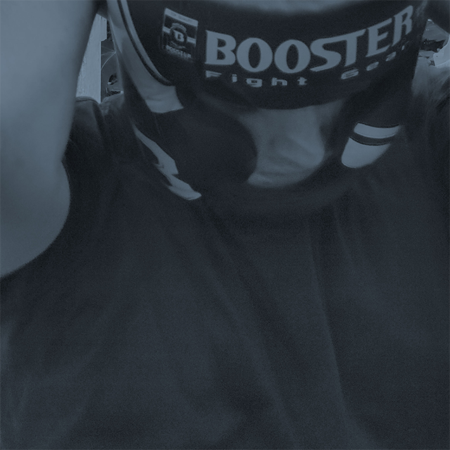
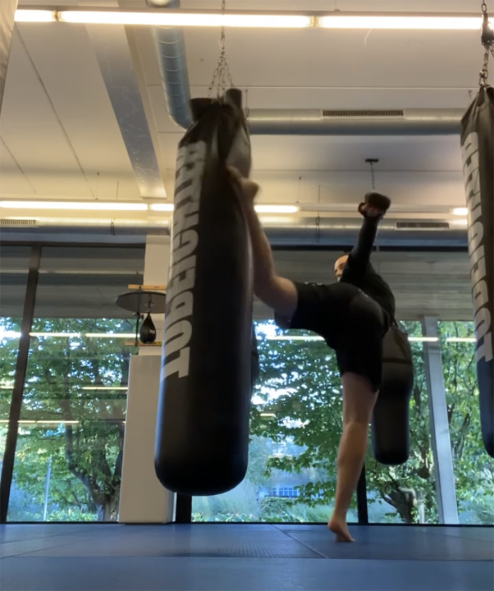

Lars Otten
werk
over mij
contact

over mij
Ik ben Lars, een creatief designer in opleiding in de Erasmushogeschool in Brussel.
Mijn focus ligt momenteel op het verder ontwikkelen van mijn design, motion en development skills.
Mijn passies & hobby’s
Naast het ontwikkelen van digitale media hou ik mij bezig met videogames en ben ik geïnteresseerd in beeldcultuur en verhalen zoals op Netflix.
Mijn grote passie ligt momenteel bij gevechtssporten. Ik train mma en doe aan gewichtheffen.
